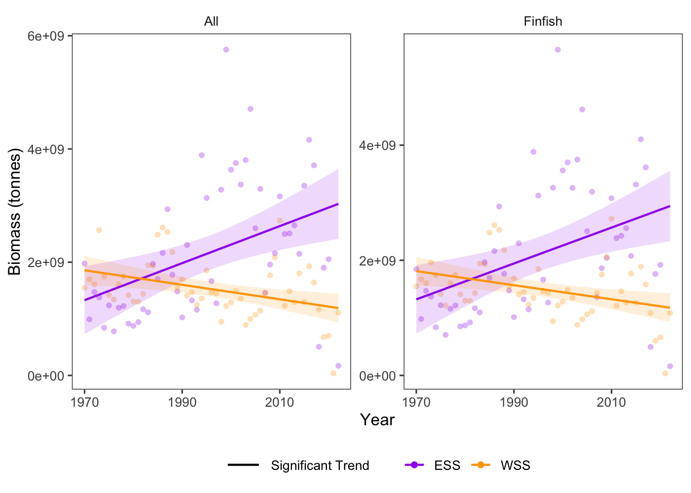

20 Resource Potential: Community
Data Type: Tabular Data (within eco_indicators)
Spatial Scope: Maritimes
Duration 1970-2022
Source: Bundy et al. 2017
20.1 Introduction to Indicator
Resource potential describes the total production capacity of the community, which can change as the community is exploited. Resource potential of the overall community serves as an indicator of productivity in the ecosystem. (Bundy, Gomez, and Cook 2017).
Resource potential of community is quantified by the biomass of grouped species:
- All
- Finfish
- Invertebrates
20.2 View Data
library(tidyr)
library(plotly)
library(stringr)
plotly_df <- data@data %>% inner_join(global_cols2)
# function to create plot with dropdown menu ------------------------------
make_biomassComm_dropdown_plot <- function(df,
year_col = "year",
region_col = "region",
value_suffix = "_value") {
# convert to long format
long <- df %>%
janitor::clean_names() %>%
pivot_longer(
cols = ends_with(value_suffix),
names_to = "metric",
values_to = "value"
) %>%
# remove suffix
mutate(
metric = str_remove(metric, "_value")
) %>%
# drop NAs (some regions don't have data for some variables or years)
tidyr::drop_na(value)
# find all metrics and regions
metrics <- unique(long$metric)
regions <- unique(long[[region_col]])
# clean names for dropdown panels, helper
pretty_label <- function(x) str_to_title(gsub("_", " ", x)) %>% gsub("Lb","Large B",.) %>% gsub("Mb","Medium B",.)
# build plot -----------------
p <- plot_ly()
# Add bar traces: metric1 has region1..K, metric2 has region1..K, ...
for (metric_i in seq_along(metrics)) {
m <- metrics[metric_i]
for (region_i in regions) {
dat <- long %>%
filter(metric == m, .data[[region_col]] == region_i) %>%
group_by(.data[[year_col]],color, region_group, region_group_label) %>% # in case you have multiple rows per year
summarise(value = sum(value), .groups = "drop") %>%
arrange(.data[[year_col]])
group_name <- unique(dat$region_group)
color <- unique(dat$color)
# If a region truly has no data for that metric, add an empty trace
# (keeps trace indexing stable)
if (nrow(dat) == 0) {
dat <- tibble::tibble(!!year_col := integer(0), value = numeric(0))
}
p <- p %>% add_bars(
data = dat,
x = ~.data[[year_col]],
y = ~value,
name = as.character(region_i),
legendgroup = group_name,
legendgrouptitle = list(
text = ifelse(group_name == "ESS",
"Eastern Scotian Shelf Zones",
"Western Scotian Shelf Zones"
)),
showlegend = (metric_i == 1),
visible = (metric_i == 1),
marker = list(color = color),
hovertemplate = paste0("<b>", region_i,":</b> ","%{y:,.2s}<extra></extra>") )
}
}
n_regions <- length(regions)
n_traces <- length(metrics) * n_regions
buttons <- lapply(seq_along(metrics), function(metric_i) {
vis <- rep(FALSE, n_traces)
shl <- rep(FALSE, n_traces)
idx_start <- (metric_i - 1) * n_regions + 1
idx_end <- metric_i * n_regions
vis[idx_start:idx_end] <- TRUE
shl[idx_start:idx_end] <- TRUE
list(
method = "update",
args = list(
list(visible = vis, showlegend = shl),
list(
title = pretty_label(metrics[metric_i]),
yaxis = list(title = "Biomass (tonnes)")
)
),
label = pretty_label(metrics[metric_i])
)
})
p %>%
layout(
barmode = "stack",
hovermode = "x unified",
title = pretty_label(metrics[1]),
xaxis = list(title = str_to_title(year_col), type = "category"), # keep one bar per year
yaxis = list(title = "Biomass (tonnes)", fixedrange = TRUE),
legend = list(
x = 1.02, xanchor = "left",
y = 1, yanchor = "top",
groupclick = "toggleitem",
itemdoubleclick = FALSE
),
updatemenus = list(list(
type = "dropdown",
x = 0, xanchor = "left",
y = 1.15, yanchor = "top",
buttons = buttons
)),
margin = list(r = 180, t = 80)
)
}
# usage:
p <- make_biomassComm_dropdown_plot(plotly_df)
p <- p %>% config(displayModeBar= F)
pFigure 20.1: Biomass of the Community in Scotian Shelf regions; 1970-2022. Use dropdown box to select a target taxonomic or functional group, and click legend to isolate regions.
20.3 Summary and Trends
Trend and summary values are automatically generated; data were last updated on marea package install on 2026-02-10
Resource potential of the community shows different trends on the Scotian Shelf between regions (Fig. 20.1).
In the Eastern Scotian Shelf, biomass of all species increased significantly, and biomass of finfish increased significantly. In the Western Scotian Shelf, biomass of all species decreased significantly and biomass of finshish decreased significantly (Fig. 20.2). Invertebrate data were not available at the “ESS” and “WSS” region scale.
Because biomass of finfish is much higher than biomass of invertebrates across regions (Fig. 20.1), trends in “all” are likely driven primarily by trends in finfish (Fig. 20.2).

Figure 20.2: Overall Biomass trends for taxonomic and functional groups over time.
20.3.1 Summary Table by Region and Functional Group
Trends in biomass over time for each speciesgroup and each NAFO region within the Eastern and Western Scotian Shelf (1970-2022) are shown in the table below (Table 20.1).
| taxon | Eastern Scotian Shelf Biomass Trends (tonnes/year) | Western Scotian Shelf Biomass Trends (tonnes/year) |
|---|---|---|
| All |
4VN: 2.50e+06 4VS: 1.52e+07 ∗ 4W: 2.04e+07 ∗ ESS: 2.67e+07 ∗ |
4X: -1.28e+07 ∗ WSS: -1.28e+07 ∗ |
| Finfish |
4VN: 2.14e+06 4VS: 1.47e+07 ∗ 4W: 1.96e+07 ∗ ESS: 2.53e+07 ∗ |
4X: -1.22e+07 ∗ WSS: -1.22e+07 ∗ |
| Invertebrates |
4VN: 1.05e+05 ∗ 4VS: 8.49e+05 ∗ 4W: 1.11e+06 ∗ |
4X: 7.71e+05 ∗ |
20.4 Relevance to Research and Stock Assessments
Changes in resource potential of the community indicate the balance between community productivity and removal by harvest. In Atlantic Canada, resource potential metrics are heterogenous between regions and taxa, and can be useful indicators of change at the local scale (Bundy, Gomez, and Cook 2017; Irvine, Pedersen, and Bundy 2025).
20.5 Variable Definitions
| variable | description | unit |
|---|---|---|
| year | Year of data collection | |
| region | Region over which data are summarized | |
| biomass_{GROUP}_value | Biomass of community groups within regions | tonnes |